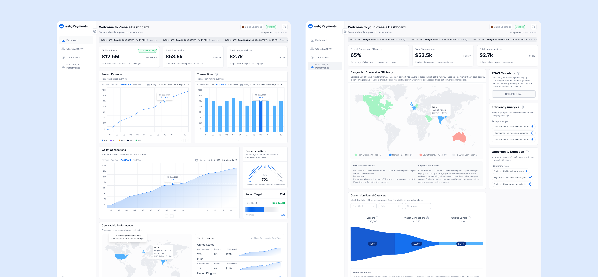
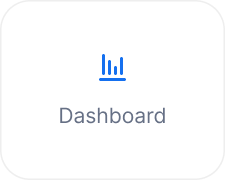
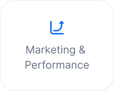
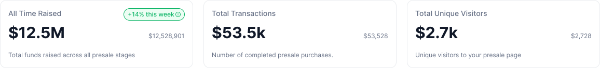
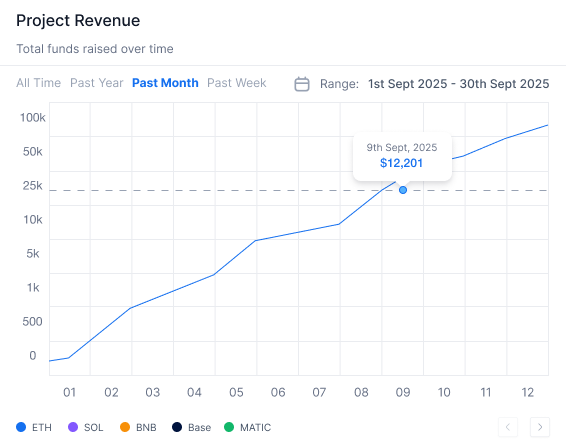
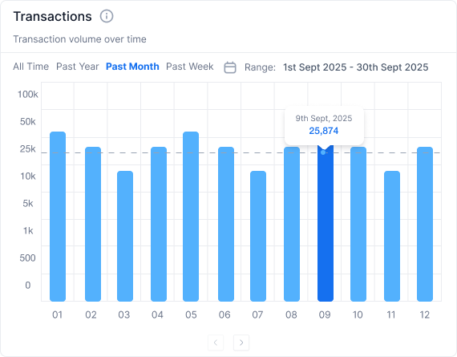
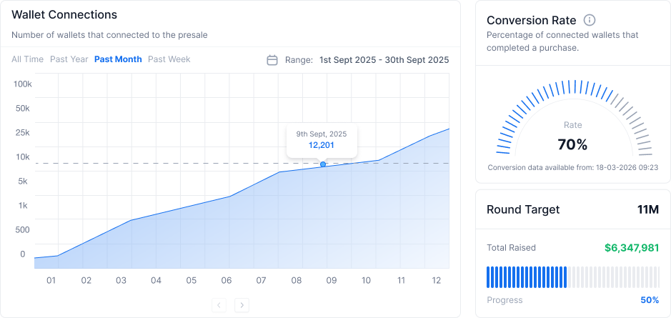
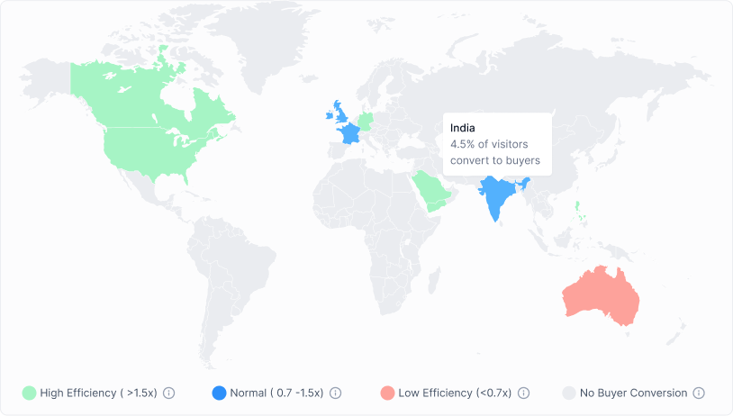
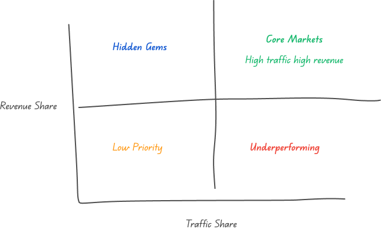

Product Design / SaaS / Web3
Web3Payments
Redesigning presale analytics so teams can detect changes, investigate causes, and decide what to do next.

Background
From seeing the numbers to understanding what happened
A dashboard can contain dozens of metrics and still leave users unsure about what to do next.
The team already had extensive presale data, including visits, wallet connections, transactions, revenue, and country performance. But that data was scattered across tools, spreadsheets, and admin systems. Bringing it into one dashboard would not automatically help users understand what was happening—or tell them what to do next.
So I did not define the goal as “design a dashboard that shows more data.” I reframed it as: how might we help teams quickly detect change, understand its cause, and identify the next action worth taking?
My contribution
As Lead Product Designer, I defined the analytics information architecture, grouped the core business metrics, designed the Dashboard Overview and Marketing & Performance experience, and translated the model into the final interface. This case study focuses on the dashboard and analytics scope of the wider Web3Payments product.

Designed for a live presale environment
A token presale is not a static marketing campaign. Fundraising performance can change rapidly in response to market activity, campaigns, community announcements, payment issues, or shifts in participant behaviour.
The dashboard therefore needed to support recurring questions: How much has the project raised? Is fundraising accelerating or slowing down? Are people visiting without completing a purchase? Are wallet connections converting into transactions? Is the current round on track? Which markets are generating meaningful participation? Does a sudden change require investigation?
I treated the dashboard not as a collection of reports, but as an operational overview for a team managing an active sale.
Different teams watch different signals
Founders care about fundraising health and round progress. Marketing teams need to know which regions and channels produce buyers. Operations teams need to locate transaction anomalies, wallet connection issues, and conversion drops.
Putting everything on one page would create a dense dashboard without a clear path through the information.
01 / Information Architecture
Overview first, explanation second
I split the analytics experience into two levels: Dashboard Overview for quickly judging overall business health, and Marketing & Performance for investigating conversion issues, comparing market efficiency, and finding growth opportunities.
This was not simply a page structure. It reflected two distinct cognitive tasks: Overview helps users detect a signal; Performance helps them explain it.
Design principles
- Put the most important outcome metrics at the top to answer, “How is the presale progressing?”
- Use consistent time ranges and filtering logic to prevent misleading comparisons.
- Move supporting detail into deeper analysis instead of overloading the overview.


Helping users assess overall status in seconds
I placed the most important outcome metrics at the top because they answer the first question most users ask: “How is the presale progressing?”
This layout lets users scan the current state within seconds, then decide whether a deeper investigation is needed.

02 / Revenue & Transactions
Connecting growth outcomes to their causes
Revenue can rise because more users complete a purchase, average transaction value increases, a few large transactions occur, or a particular market or campaign suddenly grows. Cumulative revenue alone tells the team that growth happened, but not how it happened.
I therefore placed Project Revenue and Transactions side by side, with consistent time ranges, aggregation, and filters. Keeping the charts separate reduces reading complexity while preserving comparison, helping the team see whether a revenue peak came from many purchases or a small number of high-value transactions.
Why two charts instead of one
Revenue represents financial value; transactions represent buying activity. Combining them would save space but make the chart harder to read and blur the meaning of each measure. Separate charts preserve their individual semantics while consistent controls make comparison straightforward.
Revenue = Transactions × Average Transaction Value


03 / Conversion Funnel
A wallet connection is not success—it is a stage in the purchase journey
Connecting a wallet is often treated as a high-intent signal, but a connection is not the same as a completed purchase. Users may leave because they selected the wrong network, lack sufficient funds, encounter an unclear flow, or experience a failed transaction.
In Overview, I placed Wallet Connections beside Conversion Rate. In the deeper analysis, I completed the funnel: Visitors → Wallet Connections → Unique Buyers. This helps the team determine whether the problem occurs between visiting and connecting, or between connecting and purchasing.
The diagnostic value of the funnel
If visitor-to-wallet conversion is low, the problem is more likely to be traffic quality, value communication, or the connection flow. If wallet-to-purchase conversion is low, the team should investigate network selection, insufficient balances, transaction failures, and unclear purchase steps.

04 / Market Performance
Focus on conversion efficiency, not only traffic volume
Absolute traffic allows large markets to dominate attention and can hide smaller, higher-quality opportunities. I coloured countries by relative efficiency, comparing each market’s conversion rate with the overall average and grouping performance into High, Normal, Low Efficiency, and No Buyer Conversion.
The map no longer asks, “Where are the most people?” It asks, “Where is performance better or worse than expected?” The team can scale efficient markets and identify underperforming ones that need attention.
How it is calculated
The system compares each country’s purchase conversion rate with the project average. A market above 1.5× the average is marked High Efficiency; 0.7–1.5× is Normal; below 0.7× is Low Efficiency; markets with traffic but no buyers are shown separately. If the overall rate is 5% and a country converts at 10%, that market performs 2× better than average.

05 / Prioritisation Model
Turning market signals into priorities
No single metric can show whether a market deserves investment. I combined traffic scale and revenue contribution in a two-dimensional model: high-traffic, high-revenue core markets should continue to scale; high-traffic, low-revenue markets need conversion improvements; low-traffic, high-revenue markets are opportunities to explore; and markets low on both dimensions should remain under observation.
This is a prioritisation matrix rather than a predictive score. It gives teams a shared language for deciding where to scale, investigate, test, or simply monitor.
Four market types and corresponding actions
- Core Markets: high traffic and high revenue; continue scaling while maintaining conversion quality.
- Hidden Gems: lower traffic but strong revenue efficiency; test further and expand acquisition.
- Underperforming: high traffic but weak revenue efficiency; prioritise the landing page and purchase funnel.
- Low Priority: low traffic and low revenue contribution; monitor rather than prioritise investment.

06 / Key Design Trade-offs
What I deliberately left out
- Every metric in Overview: this sacrifices completeness at first glance, but reduces cognitive load and creates a clearer investigation sequence.
- A single combined revenue chart: separate charts take more space, but preserve meaning and make comparison easier.
- Absolute traffic on the market map: relative efficiency is less immediately familiar, but better supports budget and market decisions.
Outcome & Reflection
A clearer path from signal to action
The final system separates rapid monitoring from deeper investigation. Dashboard Overview surfaces fundraising health, transaction trends, wallet participation, round progress, and geographic signals. Marketing & Performance provides the evidence needed to investigate conversion, country efficiency, and market priority.
The design outcome is a coherent analytics model and a high-fidelity interface. This case study does not claim post-launch business impact because production adoption and performance metrics are not included here.
What I learned
The hardest part was not drawing the charts; it was defining the relationships between them. The work shifted from displaying more metrics to deciding:
- Which metrics should appear together
- Which information should be seen first
- How an anomaly connects to underlying evidence
- How an analytical result becomes a next action
The dashboard therefore does more than report what happened. It gives the team a structured way to decide what deserves attention next.